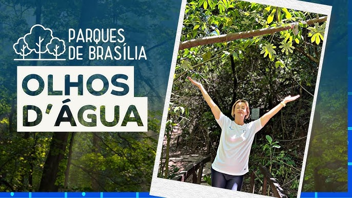
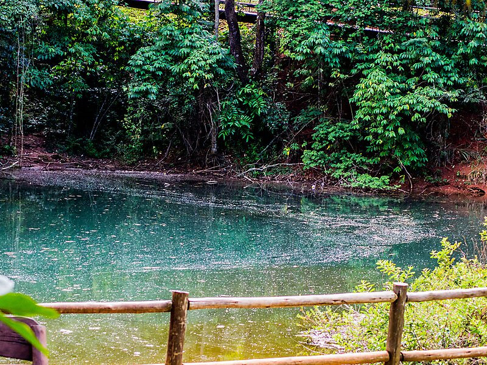
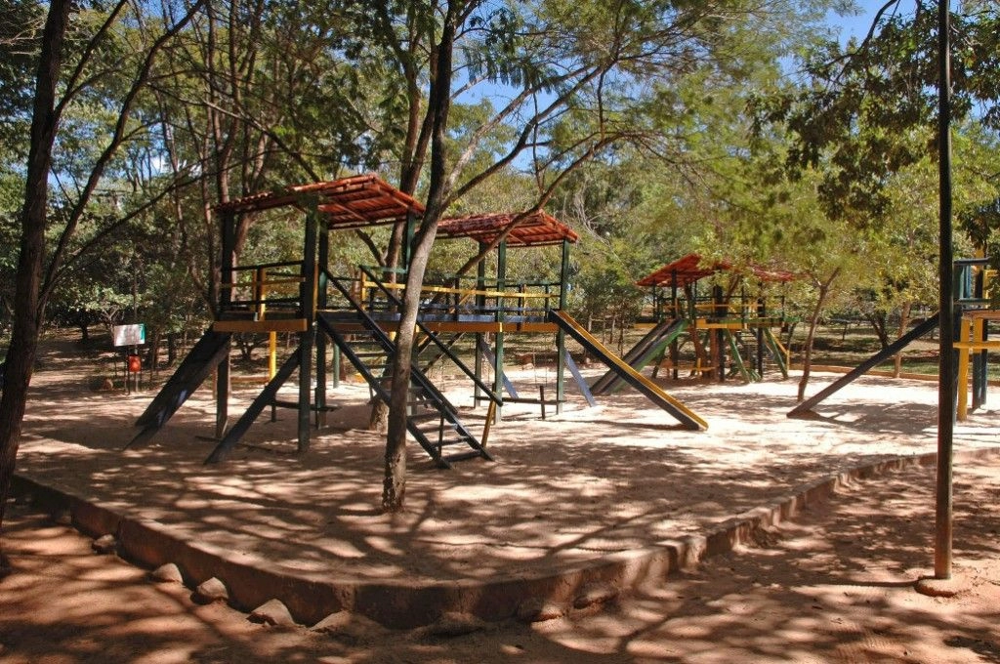
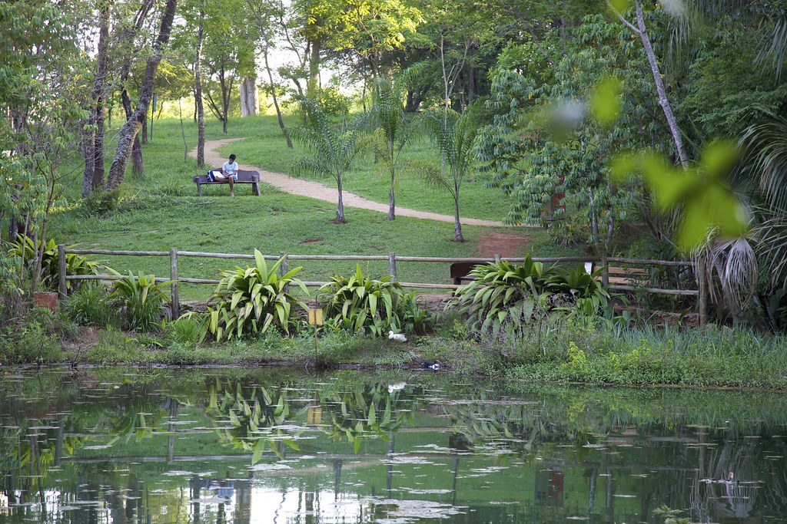
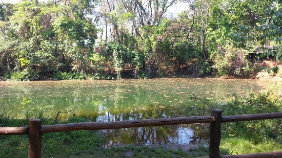
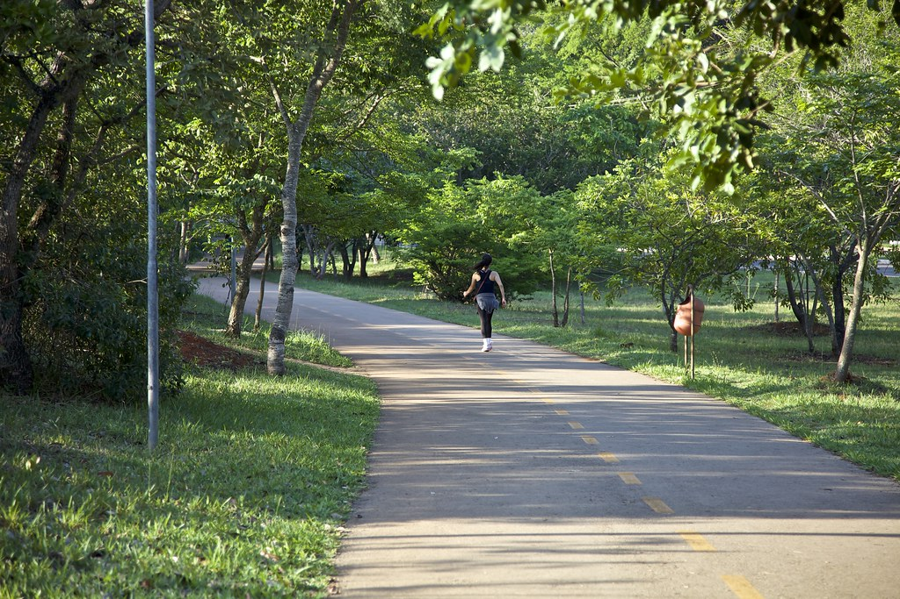
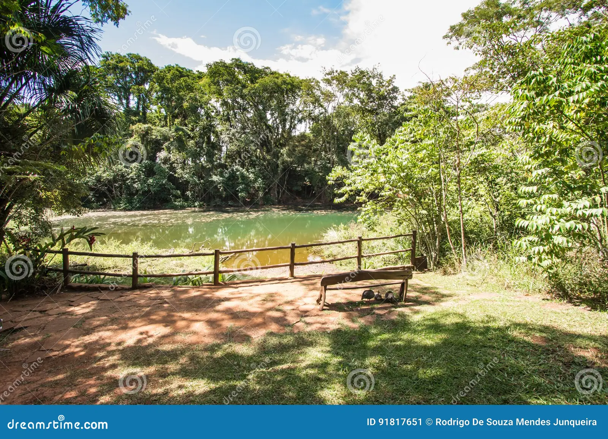
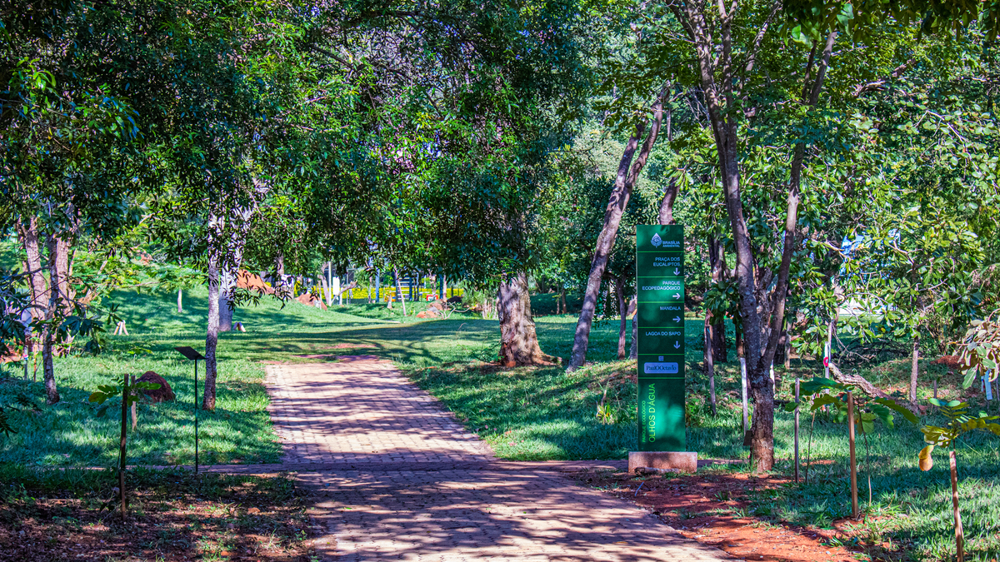
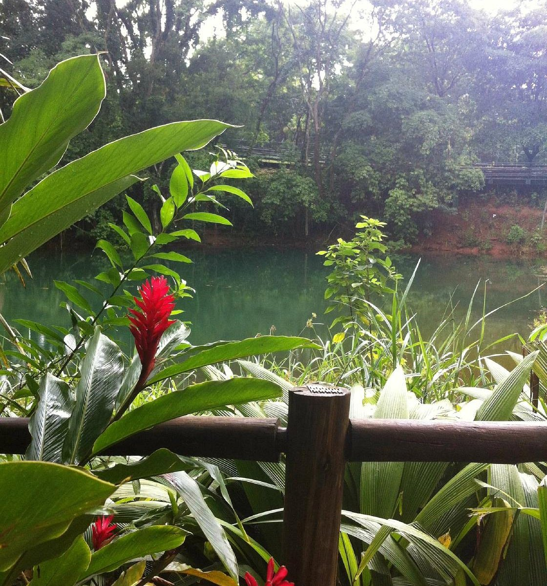
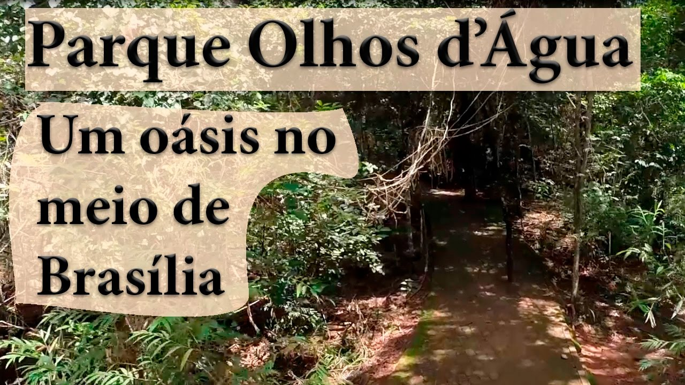

Apresentação
- O Parque Ecológico e de Uso Múltiplo Olhos D'Água, ou simplesmente Parque Olhos D'Água, é um dos parques mais queridos e frequentados da cidade de Brasília. Localizado na Asa Norte, esse oásis urbano oferece aos seus visitantes um espaço verde e tranquilo para relaxar, praticar atividades físicas e entrar em contato com a natureza. Com uma área de 28 hectares, o parque abriga diversas espécies de plantas e animais, além de contar com uma infraestrutura completa para o lazer.
Galeria de Fotos










Atrações
- Lagoa do sapo
- Trilhas
- Pista de caminhada
- Relógio do sol
- Circuito de ginástica
- Praça da vitalidade
- Áreas de lazer
Atividades
- Caminhadas e corridas: Explore as trilhas e a pista de cooper.
- Pedalinhos: Alugue um pedalinho e faça um passeio pela Lagoa do Sapo.
- Piqueniques: Aproveite os espaços verdes para um momento de relaxamento com amigos e família.
- Atividades físicas: Pratique yoga, tai chi chuan, meditação e exercícios nos equipamentos de ginástica.
- Eventos culturais: O parque frequentemente sedia eventos como feiras, apresentações musicais e atividades educativas.
Dicas
- Melhor época para visitar: O parque é agradável durante todo o ano, mas nos dias mais quentes, o ideal é visitar pela manhã ou no final da tarde.
- O que levar: Água, protetor solar, repelente, chapéu, tênis confortáveis e câmera fotográfica.
- Alimentação: É permitido fazer piqueniques em áreas específicas.
Curiosidades
- O Parque Olhos D'Água foi inaugurado em 1994 e é um dos parques mais antigos de Brasília. A Lagoa do Sapo surgiu de forma natural, a partir de uma nascente. O parque é um importante espaço para a prática de atividades físicas e para a promoção da saúde e bem-estar.
Informações Práticas
- O parque está localizado na Asa Norte e pode ser acessado por carro ou transporte público. .
- Horário de Funcionamento: Diariamente das 6h às 22h
- Entrada: Gratuita
- Facilidades: Banheiros, áreas de piquenique, playgrounds
Como Chegar
- Endereço: Asa Norte, Brasília - DF
- Transporte Público: Há diversas linhas de ônibus que passam próximo ao parque.